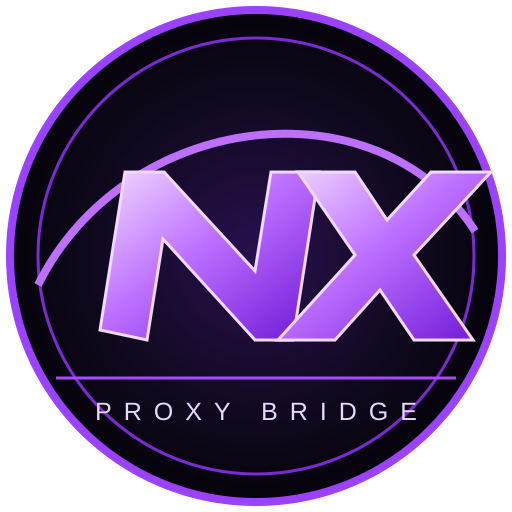

01
Прокси для всей системы
Включай и отключай системный прокси Windows одним нажатием.

NYXPROXY BRIDGEGitHub ↗Управляй прокси-подключением всего компьютера через один элегантный интерфейс. Быстро. Удобно. Под твоим контролем.
Всё необходимое для повседневной работы с прокси — без перегруженных меню и сложных настроек.
Включай и отключай системный прокси Windows одним нажатием.
Сохраняй несколько конфигураций и переключайся между ними.
Управляй подключением через системный трей.
Вставь строку прокси целиком или заполни параметры отдельно.
NYX создан, чтобы сложное ощущалось простым. Данные прокси, сохранённые профили и управление соединением собраны в одном месте.
Скачай установщик, выбери удобную папку и запусти приложение. Остальное — просто.
↓Скачать для WindowsNYX Proxy Bridge · EXE↗